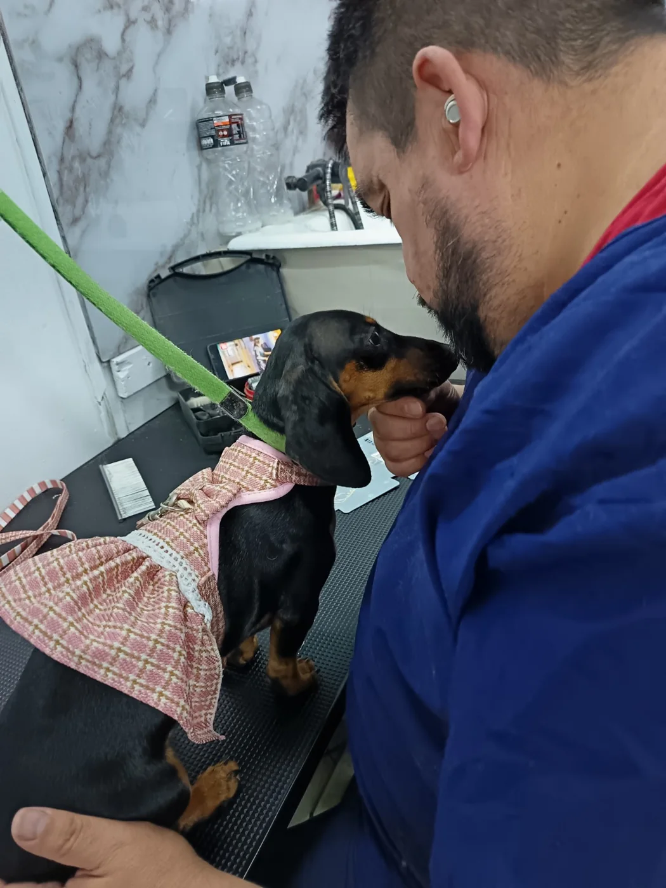

Primera peluquería
Una introducción progresiva al espacio, las herramientas y sus sensaciones.
Adaptamos cada atención al manto, comportamiento, edad y rutina de tu perro.
Una introducción progresiva al espacio, las herramientas y sus sensaciones.

Higiene y estética profesional, definidas según lo que tu perro necesita.

Seguimiento y cuidado periódico para mantener su rutina durante el año.

Una sesión adaptada a su tolerancia, priorizando higiene y comodidad.